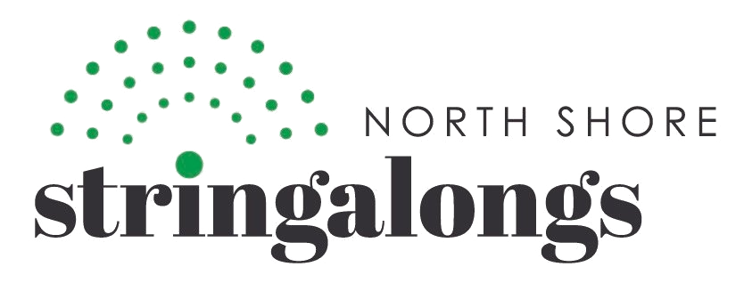
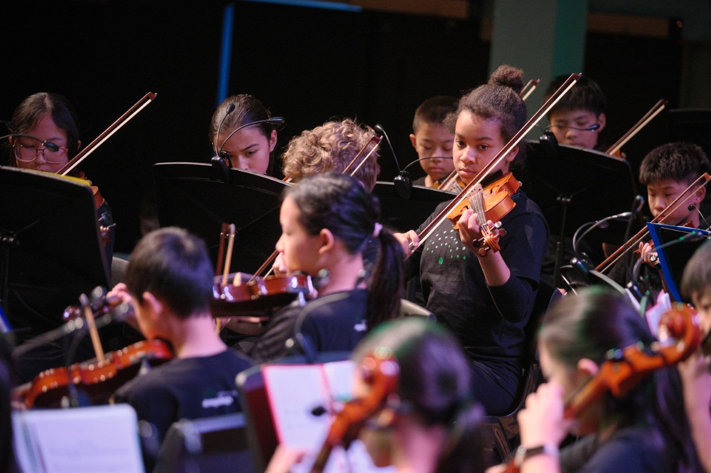
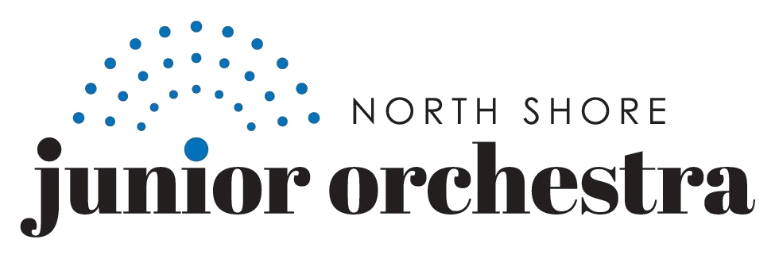
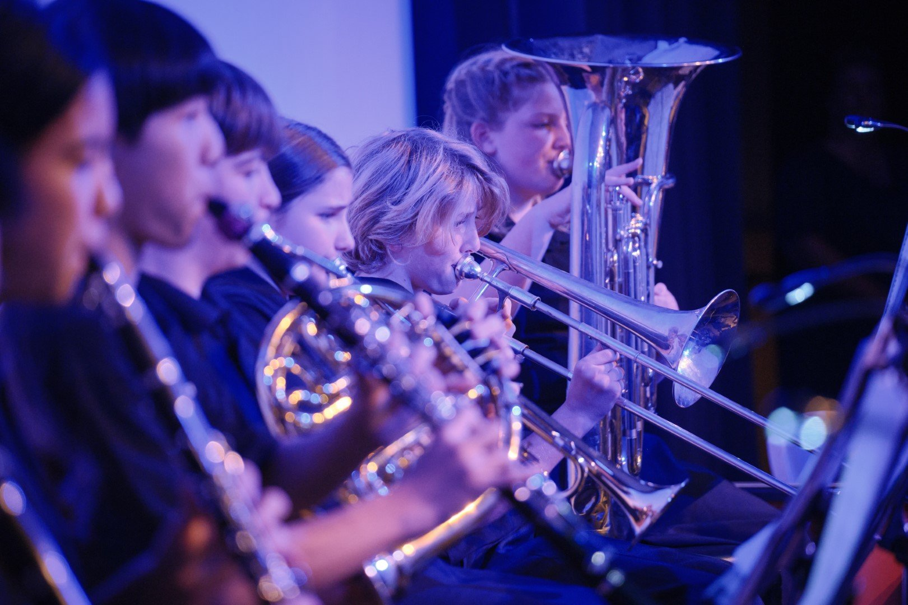

Ensembles for young instrumentalists, from first strings to full orchestra.
Apply nowThere are two orchestras to choose from — read on for rehearsal times, fees and how to join.

Age 5+, beginner string ensemble

Formed in 2013 to give young string players (violin, viola, cello, double bass) a chance to play in a string orchestra from an early age. Aimed at players from age 5 with roughly six months of lessons behind them — a non-auditioned group, open via the Application form.
Sessions focus on basic string technique, intonation and tuning, orchestral technique, sight-reading and the other core needs of a young string player. The group performs at least three times a year: the main combined concert in June, plus two community concerts.
Members who are also in the Junior Orchestra pay $350 total for both groups, rather than the two fees separately.

Ages 10–16+ (Year 6 and above) · full orchestra — strings, winds, brass and percussion

Now over 65 members strong with all orchestral instruments catered for. Recent highlights include performances at Westlake Girls High School and Matakana, and a collaboration with the 246 Studio ballet class on selections from Tchaikovsky's Nutcracker (2024); a tour to Whangarei and a Takapuna Christmas Carnival performance (2023); tours to Waiheke Island, Cambridge and Matamata (2020–21); and tours to Mangawhai, Matakana, Hamilton, Tauranga and Katikati in earlier years, including performances to over 2,500 school students and a mid-year concert at the Town Hall Concert Chamber.